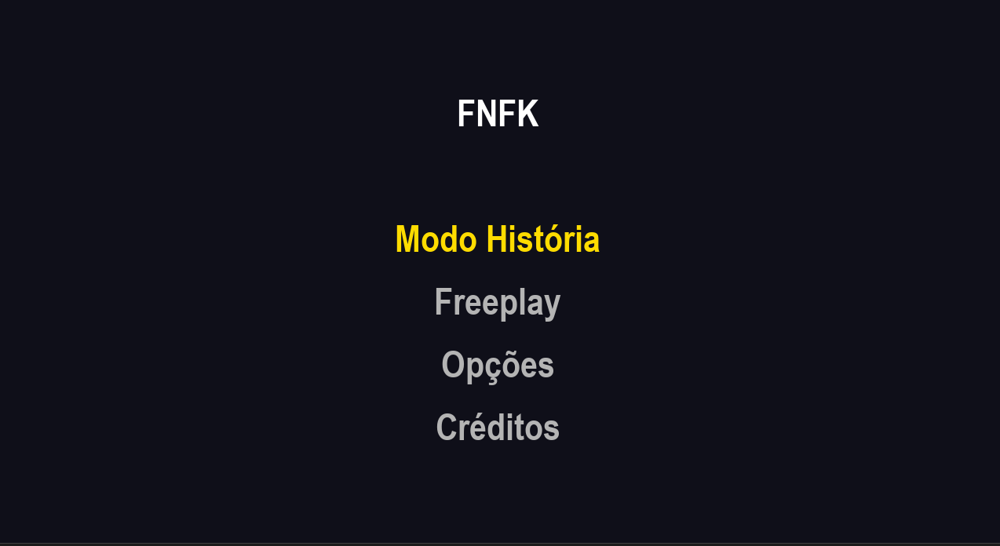
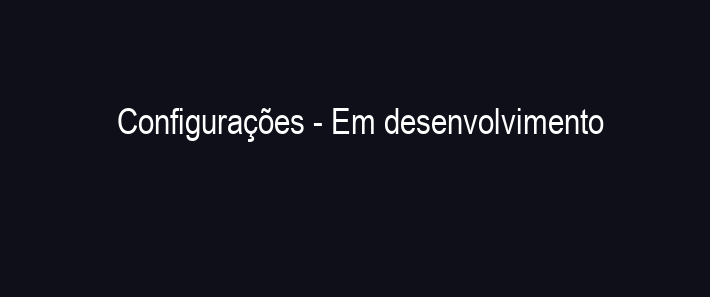
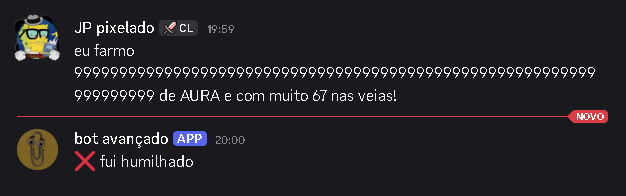

Um jogo de ritmo feito em Python + Pygame
Baixar JogoEntre no clima do funk carioca e teste seus reflexos! Acerte as notas no ritmo e conquiste a pista.


veja! veja! veja! veja! eu humilhei meu bot! farmo AURA! muita AURA!

Disponível para Windows.
DownloadUse as setas do teclado para acertar as notas no ritmo da música. Quanto mais preciso, maior sua pontuação!